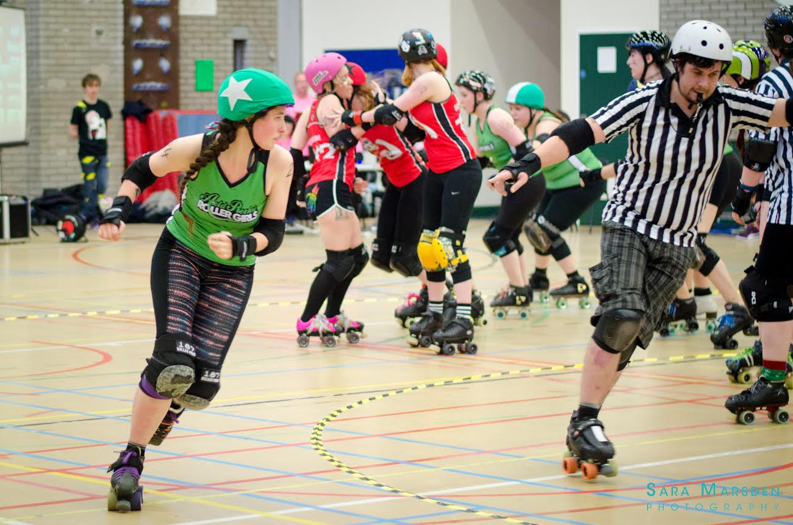

The North Sea and the Stars: Auld Reekie 's and Newcastle's C Teams.
The 28th of January sees the first full Roller Derby bout of the year in Scotland, and it's looking like being a great match.
Auld Reekie Roller Girls have had a long tradition of playing Newcastle Roller Girls over the years - both their A teams and their B teams have taken on multiple rematches, and both wins and losses (in the case of the All Stars versus Canny Belters, both in the last year!).
It was inevitable, then, with both leagues launching their C teams in 2016, that it wouldn't be long before they ended up playing each other!
 The ASTROs on track in 2016...
Auld Reekie's ASTROs have had a very busy first year, as we covered a month or two back in an interview with their captain [here], playing 4 stand-alone bouts (including one over in Belfast), and also a mini-tournament at the end of the year (which they won). Playing at home, as well, the advantages all look like being on their side...
ASTROs Captain Princess Die told us, "We are very excited to be back after our incredible win at the ARRGmageddon tournament. It was 8 weeks ago, but we've had our winter break so we're all working intensively to get ourselves game ready! We’ve lost a couple of players since our last game but the newly refreshed team who will face Newcastle are fiercely solid and determined. We are as strong as ever and ready to show Newcastle what we've got and continue ASTRO’s winning form into 2017."
Meanwhile, Newcastle's North Cs have had a more sedate opening season, with just two bouts in the last year - a loss against Spa Town, and a win against York Minxters (putting the North Cs somewhere around "high British Champs T4" level). That said, despite the experience differential, Newcastle C have a particular incentive to do well here, as their Captain, McSlay, explained : "We're very excited to be kicking Newcastle Roller Girls' 2017 season off against our good friends at ARRG. The Whippin' Hinnies (B) and Canny Belters (A) took a double win at home to end our 2016 season and the North Cs are looking to continue that winning streak in our first away game."
Of course, winning isn't everything, and the real point of this event is for both ARRG and Newcastle to find a new excuse to travel to play each other! (With both of their B teams in British Champs this year, we might expect more C team bouts in the future, as well...)
The event page for this bout is here: https://www.facebook.com/events/250628665359800/
Tickets are available for £5 online, £8 (£6 concessions) on the door, free entry for under 14’s Doors open at 14:20 at ARRG's usual venue of Meadowbank Stadium, Edinburgh.